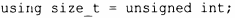
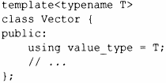
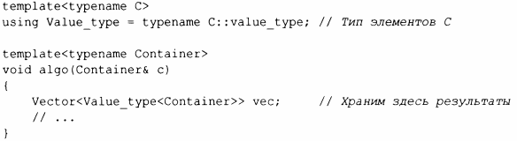
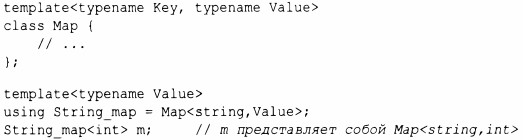

⇐6.4.1 Шаблоны переменных 6.4.3 if времени компиляции⇒
Неожиданно часто бывает полезно ввести синоним типа или шаблона. Например, стандартный заголовок <cstddef> содержит определение псевдонима size t, возможно, такой:
Фактический тип с именем size t зависит от реализации, поэтому в другой реализации size_t может быть, например, unsigned long. Наличие псевдонима size_t позволяет программисту писать переносимый код.
Очень часто для параметризованного типа предоставляются псевдонимы для типов, связанных с его аргументами шаблона. Например:
Фактически каждый контейнер стандартной библиотеки предоставляет для имени типа значений своих элементов псевдоним value _ type (глава 11, "Контейнеры"). Это позволяет писать код, который будет работать для любого контейнера, следующего этому соглашению. Например:
Механизм псевдонимов может использоваться для определения нового шаблона путем связывания некоторых или всех аргументов шаблона. Например:
